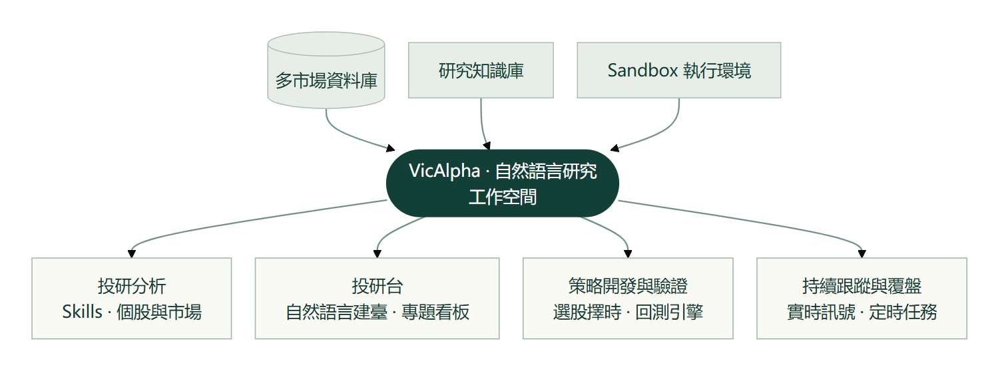

VicAlpha · AI 原生投研工作台
為機構級投資研究而設計
用自然語言研究市場、開發策略、構建投研台。 描述你關心的訊號，VicAlpha 會實時跟蹤，在條件滿足時提醒你。
多市場資料庫覆蓋 A 股、港股、美股、ETF 和基金；底層知識庫為公司分析、持倉研究和策略回測提供研究背景。
以行業輪動為例 「哪些行業的資金流入正在加速？把它們放進投研台，回測一套輪動策略，並在行業滿足入選條件時提醒我。」
使用 VicAlpha 開啟專業投研與交易工作流。
✨ 核心功能 · 🏛️ 能力結構 · 📊 投研台 · 🧪 策略與回測 · 📡 即時訊號
简体中文 | English | 繁體中文
✨ 核心功能
| 🔎 研究與分析 |
📊 策略與回測 |
📡 跟蹤與覆盤 |
| 15 個投研 Skills · 分析公司、財報、市場與資金流 |
自然語言開發 · 從選股、擇時規則到回測報告 |
實時訊號 · 按方向、強度、事件篩選 |
| 19 個投研台入口 · 瀏覽或構建專題研究頁 |
公共策略 · 檢視引數、淨值、回撤與分組表現 |
定時研究 · 按交易日或自定義週期跟蹤 |
🏛️ 產品能力結構
多市場資料庫與知識庫提供研究資料，Sandbox（沙箱）提供研究執行環境。上層工作空間將這些基礎能力與投研 Skills、策略回測和持續跟蹤工具結合。

檢視 Mermaid 原始碼
💬 研究工作空間與廣場
你可以用自然語言發起研究，再沿同一條會話追問依據。例如：「今天半導體板塊的上漲，是少數權重股帶動，還是多數成分股都在漲？」
如果想先看一份成品，可以從研究廣場瀏覽市場覆盤、產業鏈報告和策略成果。回到工作空間，可以把自己的研究問題、會話和成果放在一起。
開始你的第一項研究 ↗
| 研究入口 |
適合做什麼 |
| 研究廣場 |
按成果型別瀏覽公開研究，找到值得繼續追問的問題。 |
| 工作空間 |
從新會話提出假設，保留上下文，從已有成果回到來源會話。 |

研究廣場 · 瀏覽成果 | 
工作空間 · 發起研究 |
🧩 投研 Skills
你可以用自然語言指定研究任務。例如：「用財報體檢分析這家公司，核對上期管理層承諾，並列出本期需要追問的異常變化。」
也可以直接選用 Skills 庫中的 15 個官方模板。選擇模板後即可開始對話，再補充標的、報告期或研究假設。
選擇一個 Skill 開始研究 ↗
| 官方分類 |
模板數 |
適用任務 |
| 個股分析 |
6 |
公司一頁紙、財報體檢、技術面分析及投資論點論證。 |
| 市場研究 |
4 |
盤後覆盤、市場環境研判與次日主線篩選。 |
| 資金流向 |
3 |
分析資金流向，跟蹤國家隊及龍虎榜動向。 |
| 投研台 |
2 |
圍繞需要長期觀察的問題開展投研台研究。 |

📊 投研台
你可以用自然語言構建自己的機構級投研台。描述你想研究的問題、需要對照的指標和希望跟蹤的訊號，例如「幫我搭建一個行業輪動投研台，把市場廣度、行業資金流和擇時訊號放在一起」。
你也可以直接使用研究廣場裡的現成投研台。下表按研究用途整理了官網發現目錄中的 19 個投研台（2026 年 11 月 5 日），點選名稱即可進入，部分入口需要登入。
開始構建自己的第一個投研台 ↗
市場與策略
| 投研台 |
研究問題 |
臺內導航與專題 |
| A 股行情綜合屏 |
市場漲跌由哪些板塊帶動？ |
行情、情緒、板塊、資金、龍虎榜 |
| 情緒溫度計 |
市場情緒處於什麼位置？ |
溫度總覽、維度分解、指標明細、訊號事件、歷史覆盤 |
| 漲停板 |
連板高度和題材熱度如何演變？ |
情緒總覽、連板天梯、題材主線、個股明細、次日表現 |
| XHN-A股擇時系統 |
左側、同步與右側訊號何時一致？ |
綜合看板、左側抄底、同步跟蹤、右側逃頂、使用方法、指標體系 |
| 逆向投資 |
哪些低溫行業出現拐點訊號？ |
逆向總覽、市場溫度、行業逆向、候選榜、陷阱排雷、拐點訊號 |
| A 股產業鏈圖譜 |
同一條產業鏈的上下游有哪些環節？ |
選擇產業鏈、上中下游圖譜。頁面提供環節與產品的下鑽說明 |

情緒溫度計 · 六維貢獻 | 
三階段擇時 · 綜合評分 |
資金與交易結構
| 投研台 |
研究問題 |
臺內導航與專題 |
| A股資金流投研台 |
如何從資金需求、供給與廣度形成日度判斷？ |
日度報告共 12 節：結論、增量、供給、方向、承接、主體、行為、廣度、趨勢、階段、交易、口徑 |
| A 股資金流 |
哪些渠道和板塊的資金動向值得跟蹤？ |
總覽、主力動向、板塊跟蹤、個股熱圖、兩融槓桿、跨境資金、ETF 資金、龍虎榜、產業資本 |
| A 股融資融券 |
槓桿週期走到哪裡？哪些標的風險較高？ |
總覽、槓桿週期、行業兩融、個股兩融、風險監測、個股詳情 |
| 全 A 籌碼結構 |
不同板塊的持倉成本和獲利比例有何差異？ |
籌碼總覽、行業籌碼、籌碼篩選、個股籌碼 |
| A 股交易擁擠度 |
擁擠集中在哪些行業、風格和個股？ |
總覽、市場擁擠、行業擁擠、行業詳情、風格擁擠、個股擁擠、個股詳情、機構持倉 |
| 股票供給 |
如何跟蹤發行、減持、回購與解禁壓力？ |
官網已列出；開啟後提示「該臺暫未接入」 |
| 股票ETF資金流 |
如何觀察 ETF 淨申購與成分股被動需求？ |
官網已列出；開啟後提示「該臺暫未接入」 |

資金流 · 市場總覽 | 
資金流 · 行業方向 |
檢視更多資金流趨勢與階段
機構與持倉
| 投研台 |
研究問題 |
臺內導航與專題 |
| 公募抱團 |
公募持倉集中在哪裡？擁擠組的表現如何？ |
抱團總覽、個股擁擠度、個股透視、基金與資金、行業與倉位、抱團指數 |
| A 股公募持倉 |
不同基金公司怎樣配置行業和個股？ |
持倉總覽、公募排行、持倉詳情、個股持倉、行業動向、持倉熱力、公司比較 |
| 美股 13F 機構持倉 |
哪些機構調整了持倉？行業分佈如何變化？ |
13F 總覽、機構排行、機構詳情、個股持倉、行業動向、持倉動向、機構對比 |
| 國家隊全景 |
國家隊透過哪些 ETF 和持股組合參與市場？ |
全景總覽、ETF 託底、持股組合、持倉全景、調倉動向、主體詳情、個股透視 |
| A 股十大流通股東 |
重要股東持有哪些標的？籌碼是否更集中？ |
股東總覽、主體排行、主體詳情、個股股東、行業動向、籌碼集中度、事件訊號 |
| 機構調研 |
哪些公司受到機構調研關注？ |
官網已列出；開啟後提示「該臺暫未接入」 |

公募抱團 · 擁擠度與收益 | 
美股 13F · 機構持倉 |
🧪 AI 策略構建與回測
你可以從自己的交易假設開始，也可以選用官方策略作為起點。兩種方式都可以結合歷史回測，檢查規則在什麼條件下有效，以及為此承擔了多大回撤。
自定義策略
你可以把交易想法寫成可檢驗的規則。例如：「回測雙均線擇時策略，以滬深 300 為基準，比較不同引數下的收益和最大回撤。」
在工作空間選擇「策略構建 → 策略回測」輸入需求。也可以先讀已有官方報告，看清策略採用的引數、適用行情和失效場景。
開始策略開發 ↗
| 回測環節 |
要說明或檢查的內容 |
| 提出需求 |
標的或樣本池、比較基準、買賣規則，以及希望比較的引數。 |
| 解讀報告 |
把收益與最大回撤、夏普放在一起看，再檢查交易規則和樣本表現分佈。 |

自然語言輸入 · 雙均線需求示例 | 
已有官方報告 · 赫爾均線趨勢 |
歷史會話實景 · 黃金 ETF SuperTrend
左側為策略開發對話，右側為同一會話中開啟的回測報告。報告覆蓋 2023-09-08 至 2026-09-07，總收益 29.29%，最大回撤 30.72%。

公共策略
你可以從現成策略出發，再用自己的問題檢驗規則。例如：「比較低 PB 和 Piotroski F-Score：兩者怎樣選股，回撤表現有什麼差異？」
官方策略庫分別提供選股和擇時策略。開啟報告可以檢視規則、歷史收益與回撤，也可以克隆策略繼續研究。下表列出八個示例。
瀏覽公共策略庫 ↗

| 型別 |
策略 |
規則 |
歷史回測 |
| 選股 · 價值 |
低 PB |
按賬面價值相對市值篩選股票。 |
 |
| 選股 · 質量 |
Piotroski F-Score |
用九項財務訊號衡量公司質量。 |
 |
| 選股 · 價值 |
聶夫總回報 |
結合低市盈率、適度增長和分紅篩選公司。 |
 |
| 選股 · 資金流 |
基金持倉增持 |
關注公募持倉佔比連續兩個報告期上升的公司。 |
 |
| 擇時 · 複合 |
赫爾均線趨勢 |
觀察赫爾均線相對前值的升降。 |
 |
| 擇時 · 趨勢跟蹤 |
指數均線金叉 |
以短期與長期指數移動平均線的交叉跟蹤趨勢。 |
 |
| 擇時 · 趨勢跟蹤 |
半趨勢通道翻轉 |
用高低價格的平滑通道識別多空轉換。 |
 |
| 擇時 · 趨勢跟蹤 |
SuperTrend 趨勢線 |
觀察價格穿越基於 ATR 的軌道時，趨勢方向是否翻轉。 |
 |
歷史回測精選 按上表四個選股示例與四個擇時示例各自的年化收益，分別選取低 PB（16.0%，最大回撤 17.4%）與赫爾均線趨勢（19.1%，最大回撤 25.7%）。低 PB 是組合收益，赫爾均線報告展示 100 個標的的均值；兩者統計口徑不同。
🔎 個股研究與跟蹤
在個股研究頁，你可以把股價變化與公司基本面對照起來。例如：「過去一年，公司股價相對滬深 300 的變化，是否與主營業務收入和利潤變化一致？」
從概覽進入行情、技術與籌碼、資金、財務、估值、研報與預期、股東、機構持倉或公司事件。下圖以貴州茅臺為例，可直接看到行情摘要、價格對比、公司資料與主營構成。
開始個股研究與跟蹤 ↗
| 觀察維度 |
可用工具 |
| 公司研究 |
財務、估值、研報與預期、股東及機構持倉。 |
| 價格與趨勢 |
K 線、均線、布林帶及復權切換。 |
| 量能與動量 |
成交量、MACD、KDJ 和 RSI 等指標。 |

📡 實時訊號提醒
你可以用自然語言定義關注條件。例如：「當自選股滿足我的擇時策略入場條件時提醒我。」平臺持續跟蹤條件，在訊號觸發時提醒你。
在訊號頁，可以從訊號流開始，再用類別、方向和強度縮小範圍；想比較多隻股票時，也可以切換列表或熱力檢視。
檢視交易訊號 ↗
| 篩選維度 |
可選範圍 |
| 訊號來源 |
策略、技術、形態、量價、資金、事件。 |
| 閱讀方式 |
按方向與強度篩選，按股票合併或逐條檢視。 |

🗓️ 定時研究任務
把重複研究寫成一條帶頻率的指令。例如：「每個交易日收盤後，覆盤 A 股市場廣度、成交額和領漲行業。」
從任務頁點「新建任務」描述需求。已有任務可以按型別、頻率和執行狀態查詢，便於檢查哪些研究仍在跟蹤、哪些需要處理。
開始設定你的第一個定時任務 ↗
| 任務管理 |
可用選項 |
| 研究型別 |
報告、選股、回測與策略、簡報等。 |
| 執行頻率 |
單次、每天、每個交易日、每週、每月或自定義。 |
| 執行狀態 |
啟用、已暫停、異常、已停止。 |

開啟 VicAlpha，開始研究 ↗